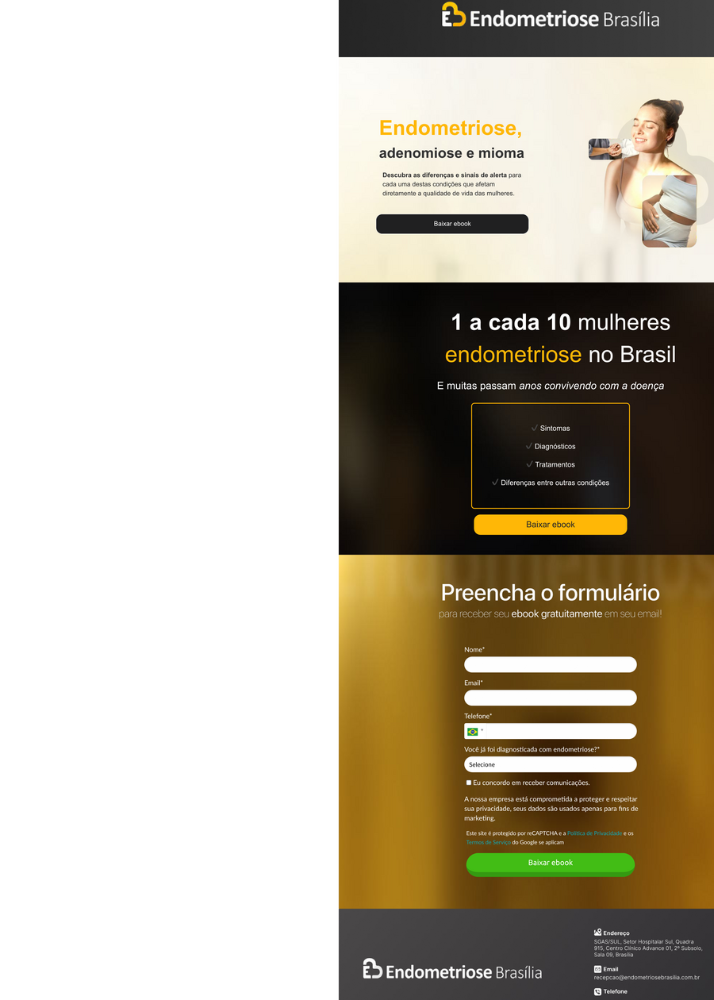

UI design for a healthcare e-book campaign for a specialized endometriosis clinic in Brasília. Conversion-focused layout for a sensitive, emotionally aware audience.
Role
UI Designer
Solo
Timeline
2025 — Live
Scope
UI Design
Conversion
Result
27% conversion
465 leads · 5mo

Context
A specialized endometriosis clinic in Brasília needed a landing page to capture qualified leads through a top-of-funnel e-book. I was responsible for UI design only — copy was provided by the clinic's content team.
The challenge: visual hierarchy that converts without exploiting an emotionally vulnerable audience. Traffic came from Google Ads with informational search intent.
View live page →Design Decisions
01
Hierarchy over decoration
The dominant gold draws the eye to two things only: headline and CTA. No visual noise competing for attention.
02
Form positioning
Form placed below social proof to convert curiosity into action. Minimal fields reduce friction without losing qualification.
03
Calm, not urgent
Warm palette, rounded shapes. No countdown timers or aggressive CTAs — the audience is anxious; the page should feel reassuring.
Results
27%
Average conversion rate · 5 months
465
Qualified leads generated
1.7k
Visitors from paid traffic
Conversion design and emotional design aren't opposites. The page converts because it respects the user — not despite respecting them.